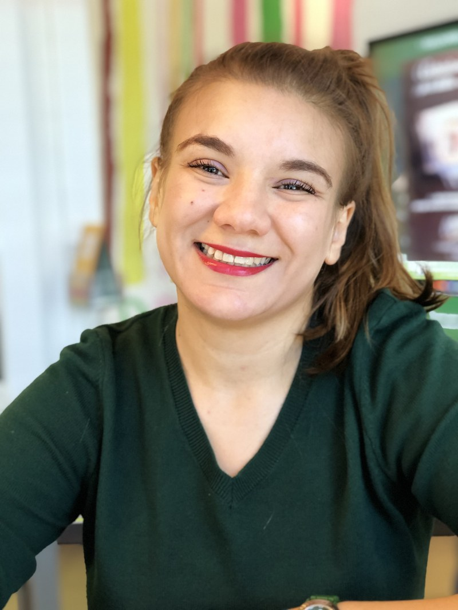
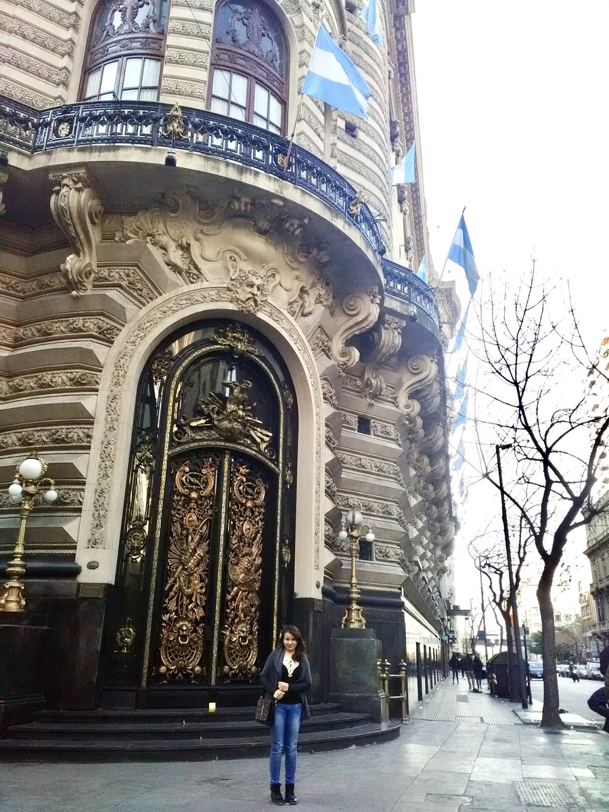
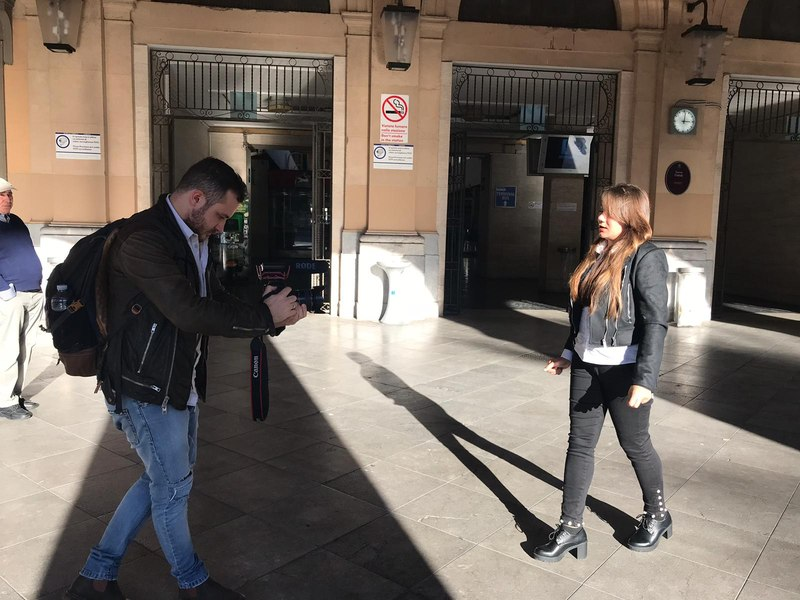
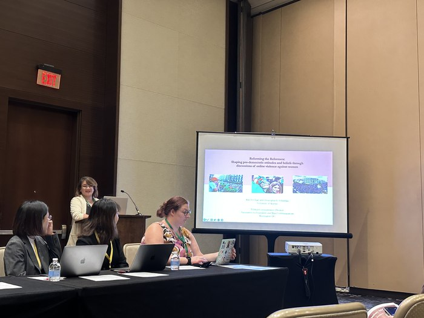
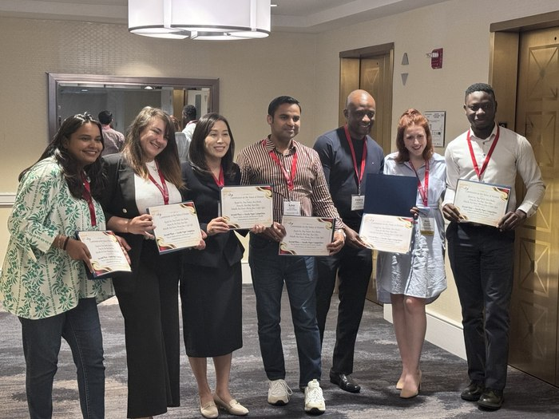

Computational social scientist and strategic communication scholar studying how media, digital platforms, and emerging technologies shape attitudes, behaviors, and society.
I am a computational social scientist and strategic communication scholar studying how media, digital platforms, and emerging technologies shape attitudes, behaviors, identities, and decision-making, with particular attention to health, representation, and social issues.
My research brings together media effects, persuasion, strategic communication, and computational social science to examine how communication influences people and communities across rapidly evolving digital environments. I use natural language processing, machine learning, and large-scale social-media data alongside experiments and mixed-method approaches, keeping every method anchored to a human question.

My path to academia was shaped by nearly a decade of work across journalism, strategic communication, international development, and public engagement in North Africa, Europe, and the United States. Working across cultures and communication contexts shaped the questions that continue to drive my scholarship, and it grounds my commitment to keeping the people and social contexts behind the data at the center of my work.


Communication, media, and community engagement across borders and cultures.

Presenting computational research on media, health, and digital society.

Honored for research, teaching, and service to the academic community.